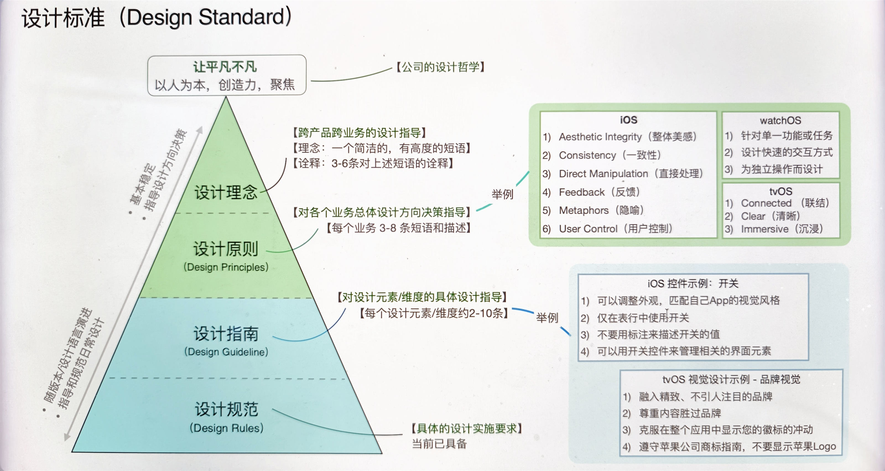
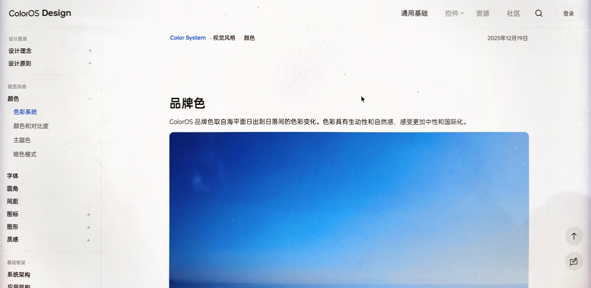
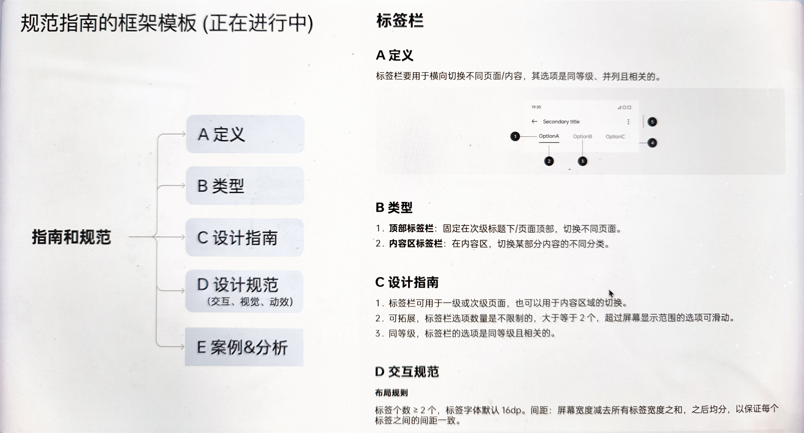
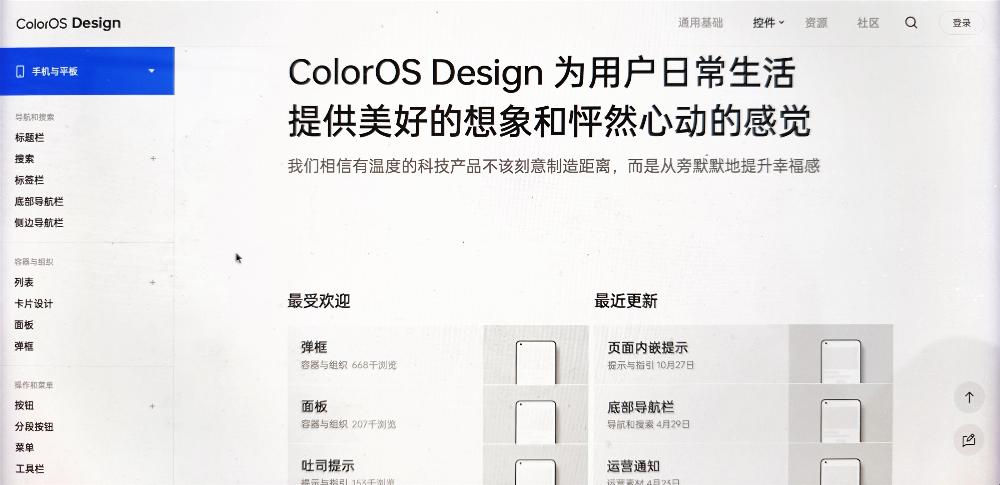
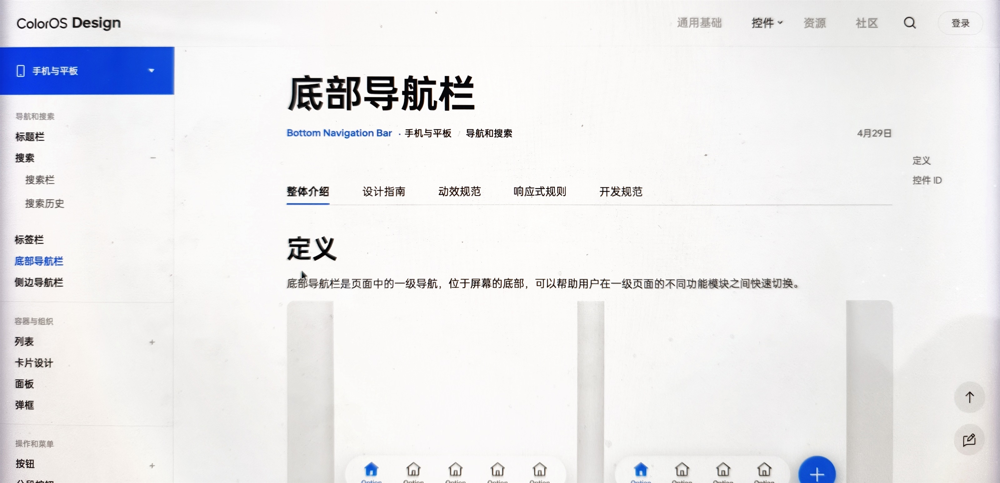
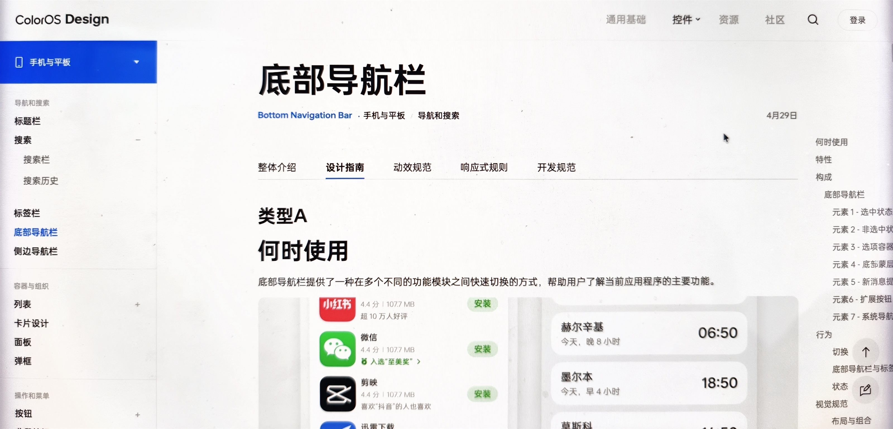
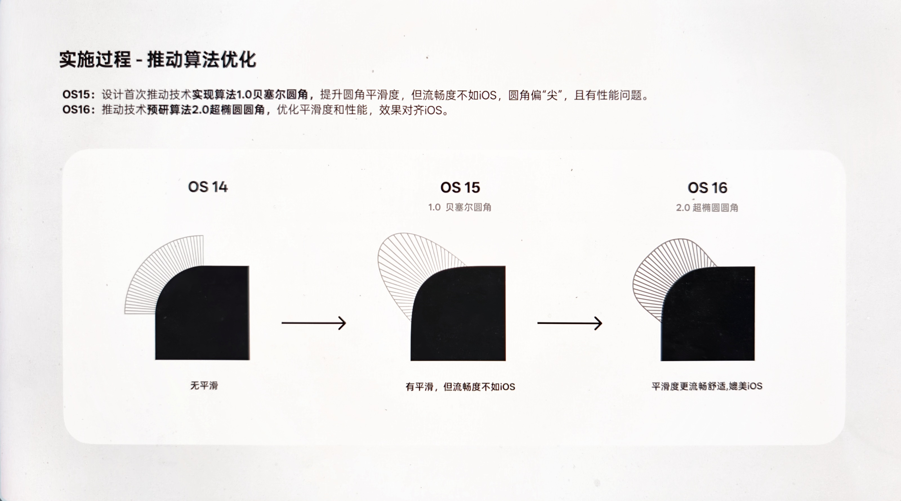
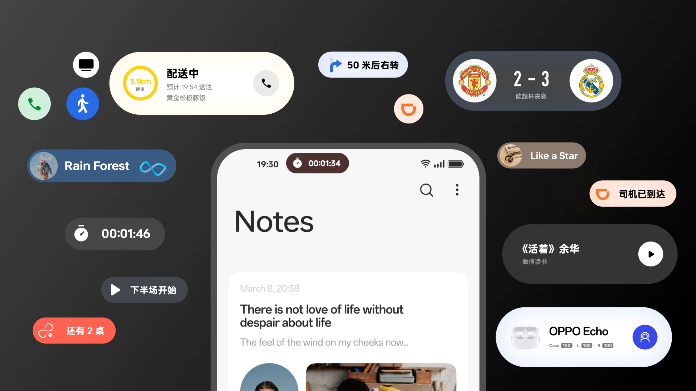
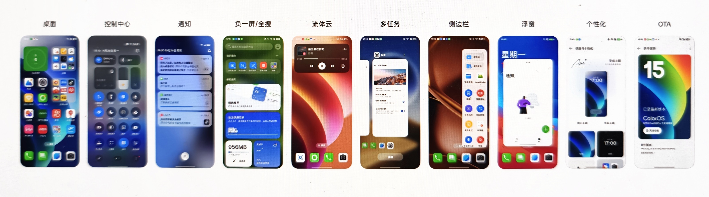
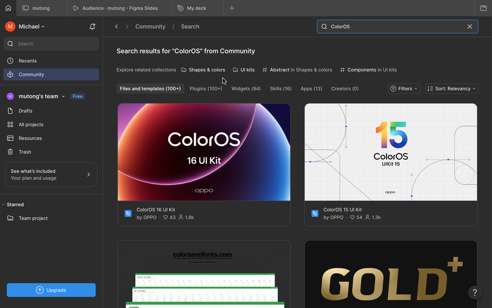

ColorOS 设计系统
为提升高端体验的一致性，公共设计团队牵头建立并上线从 Token 到控件使用指南的设计规范体系，与研发共同将公共规则落地为可复用控件，支撑全系统和多品牌产品持续迭代。
项目背景
面对华为在高端市场的竞争压力，公司高层发起高端突破专项，系统体验成为重点建设方向。专项对 Apple、LV 等高端品牌的观察形成了一项判断：稳定一致的产品表达，是高端品质的底线，也是建立品牌认知的长期投入。
落到操作系统，用户在应用之间切换、在不同设备上使用同一功能，都应感受到连贯的设计与品质。需要把这一要求落实到日常使用的每个控件、页面和系统场景，并在后续版本中持续保持。设计标准的落地与问题解决由公共设计团队负责人统筹，并与行业专家 董建明 协同推进。
问题现状
历史产品的偏差遍布系统界面与应用。每次大版本刷新，都要重新组织设计、开发和核对。
- 40+ 应用重复实现 同一套公共规则分散到多组研发，控件样式与页面细节逐渐分化，用户跨应用使用时反复感知差异。
- 6+ 个月设计研发投入 每年版本升级需要超过 6 个月的设计与研发投入。走查发现的问题要逐页核对、逐项修正，同类问题仍可能随业务迭代再次出现。
- 3 个品牌需要适配 OPPO、一加、realme 的品牌调性和硬件轮廓不同。统一体验还需兼容机型差异，业务逐一适配进一步放大工作量。
横向并列 4–6 个历史应用界面，按标题栏、控件、间距与色彩分组圈出差异，强调同一系统中的割裂感。注明应用和版本；这里展示整改前的真实状态。
2023 年，发起 ColorOS 13→14 一致性走查，将分散的体验偏差汇总为可追踪的问题清单。
- 本轮走查发现的不一致问题
- 800+
- 这批问题近一年的解决率
- 90%
专项修复收敛了当期问题，也暴露出维护成本：每次改对一个界面，仍要在其他应用和后续版本重新保证。 公共规则的多处实现、独立修改与逐项验收，是一致性反复失守的结构性原因。
用一项有记录的同类问题串起「本轮发现—修复关闭—后续版本再次出现」。展示版本、问题记录与界面局部，说明整改的持续性局限；不要把 90% 解决率画成复发率。
设计目标
以一到两个版本为首轮建设周期，建立可持续维护的系统级设计标准，让品质要求进入业务的日常设计与开发。
- 提升系统品质 统一基础样式、控件行为和高频场景规则，让跨应用体验形成稳定的品牌识别。通过同类场景对照检验一致性。
- 减少重复投入 将共用设计决策转为规范与公共实现，让业务直接复用，将更多设计与研发投入留给业务体验和创新。
- 支撑持续演进 明确公共标准与品牌、机型差异的边界，使资产能够随版本更新，并保留业务扩展空间。
- 设计策略 存量问题通过专项走查修复，增量优先建设跨应用高频复用的公共能力，按版本成套交付设计规范与工程控件，并用配置承接品牌和机型差异。
设计系统架构
从判断标准到业务使用，将整套系统归纳为五层。每层回答一个不同的问题，并为下一层提供可复用的定义。
- 设计原则判断什么是好的体验将公司设计理念拆解为体验判断与评审依据，统一对品质和一致性的理解。
- 基础样式与 Token统一视觉语言与基础取值定义颜色、字体、间距、形态等基础规则，以可复用的取值表达设计决策。
- 公共控件统一可复用的交互单元规范按钮、列表、弹窗等控件的样式、状态、行为和使用边界，连接设计定义与工程实现。
- 场景模式组织完整场景与适配规则组合控件与规则，约束标题栏、窗口等系统与应用场景，处理页面关系和设备适配。
- 交付资产让业务能够找到、选用、实现通过内网规范、控件使用指南、设计资源和工程控件，分别支持查询、设计与开发接入。
五层为能力关系示意，实际栏目与交付范围以规范系统为准。版本维护、场景反馈和规则更新贯穿各层。
4.1 设计原则

4.2 基础样式与 Token

4.3 公共控件
公共控件规范横滑浏览 · 点击看原图

规范指南框架与标签栏示例 
控件总览 
底部导航栏 · 整体介绍 
底部导航栏 · 设计指南
4.4 场景模式
将公共控件组合成标题栏、窗口等可复用的场景模式，明确控件在页面中的组合方式与设备适配规则。
待补标题栏或窗口的场景规则与设备适配示例。
4.5 交付机制
内网规范与控件使用指南提供查询和使用指导，设计资源供业务复用，公共控件和参数接口支持研发接入。一次规则更新需要同时回答“设计怎么用、研发怎么接、场景怎么验”。
- 公共设计定义标准统一基础取值、控件用法和场景边界。设计规范与控件指南
- 公共研发实现能力将共用规则落实为可复用的工程能力。公共控件与参数接口
- 业务团队接入验证按场景选用控件，检查界面表现并记录例外。接入结果与场景反馈
反馈与更新接入验证发现的遗漏和例外，反馈给公共设计与研发，推动规则和实现同步更新。
深度案例 · 圆角体系
圆角同时牵动视觉品质、控件尺度、软件渲染与硬件轮廓，是检验整套设计系统能否贯通的代表场景。难点在于：全系统保持一致的形态品质，同时适配三个品牌持续变化的硬件 ID。

- OS15软件基础 · 按用途选档梳理全量控件圆角，以 4 为倍数建立 Token 梯度，按用途对应工业设计（ID）档位。用 G2 处理直线与弧线的曲率连续性，先让部分控件与业务接入。
- OS16硬件参数 · 按机型取值协调硬件与软件团队，统一屏幕圆角参数的入口。需贴合屏幕的窗口、截屏等场景读取各机型的唯一配置，保留设备轮廓差异。
- OS17场景扩展 · 覆盖系统一级场景将已有规则与实现扩展到全量控件和系统一级场景，根据业务迭代和反馈持续补齐遗漏。
关键取舍：控件按用途选档，贴屏场景按设备取值。 平台统一选用规则与实现方式，避免将一个固定圆角尺寸套用到所有控件和机型。

左图调整前，右图调整后。标出窗口圆角与屏幕轮廓的关系，注明机型与系统版本。使用实机或带真实设备边界的画面，避免仅靠截屏推断硬件轮廓。
用户和研发技术负责人开始主动提出尚未接入的场景。平滑圆角逐渐成为共同关注的体验标准，补齐覆盖也获得了业务侧的持续推动。

项目成果
从基础 Token 到控件使用指南，完整规范系统已在内网上线。围绕品质、复用与演进三项目标，形成以下交付与采用结果。
- 改善系统一致性 到 ColorOS 16，多个应用的标题栏呈现出更一致的设计，窗口、截屏等场景也已采用相应圆角规则。
- 减少重复适配 使用公共控件即可继承平滑形态与 ID 档位；接入屏显参数后，可随不同机型匹配轮廓，重复适配的增量工作趋近于零。
- 积累跨版本资产 设计规范与公共实现成为后续接入的基础，圆角能力在 OS15 基础上逐步扩展到更多控件与系统场景。
复用收益以已接入的控件和参数场景为边界，新场景仍需接入与验证。
设计系统为后续变化提供了可复用的规则和资产，也需要持续处理新场景与新的技术约束。
- 维护场景覆盖 跟进业务迭代，检查新增控件、例外场景与参数接入，持续更新规范和公共实现。
- 应对渲染升级 ColorOS 17 引入流体设计后，轮廓光与质感模糊给圆角渲染带来新的功耗和技术挑战，需要重新平衡视觉表现、性能与设备能力。
- 支撑 AI 与生成式 UI Token、控件定义、使用指南和工程实现，为生成过程提供可调用的资产与明确约束，为系统设计的 AI 演进奠定基础。
附录 · 公开设计资产
OPPO 在 Figma Community 发布了 ColorOS 15、16 两代 UI Kit，形成面向外部设计者的公开设计资源。

补一张组件与基础样式总览，选能体现资产完整性的图组，保留名称、分类与版本。展示真实 Kit 内容，避免只放封面。
补一张组件、变体与代表页面的详细图组；如与前代对照，仅标出可核实的变化。注明来源和版本。